Algorithmic Generation of OpenGL Geometry
Jonathan Hartley
- This presentation:
- https://bitbucket.org/tartley/algorithmic-generation-of-geometry
- Code:
- https://bitbucket.org/tartley/gloopy
Starting Point
The minimum viable OpenGL application:
- Open a window which provides an OpenGL context
- Call an empty 'draw' function at 60fps
Could use pyglet or PyGame or wxPython or GLUT or Qt.
I'm assuming we're starting with a minimal OpenGL application.
By which I mean open a window, and redraw a blank screen at 60fps. I think I can actually show you a demo of that...
I'm using pyglet to do this, but you could use a bunch of different libraries. Whichever one you use, there are lots of tutorials about getting this up and running, so 'getting started' isn't what I want to talk about.
The idea of this talk is that I want to show some code you can add on top of this minimal OpenGL loop in order to create some funky virtual scultures and animations.
I want to demonstrate that producing chunky retro graphics is easy, and can be done with with a surprisingly small amount of code. I want you to leave here enthused to generate your own virtual sculptures or animations or games.
Goal
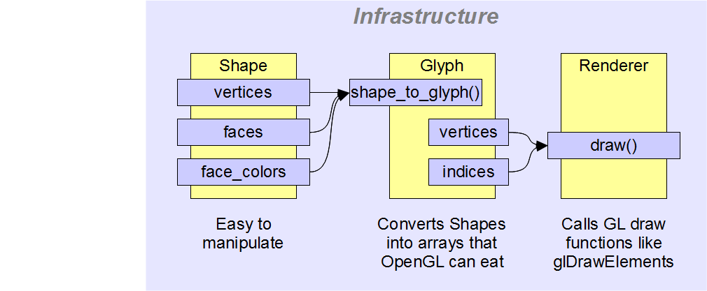To begin with, I'm going to lead you as quickly as I can through a couple of classes that take some shapes defined in a useful way, and convert them in to OpenGL calls.
Goal
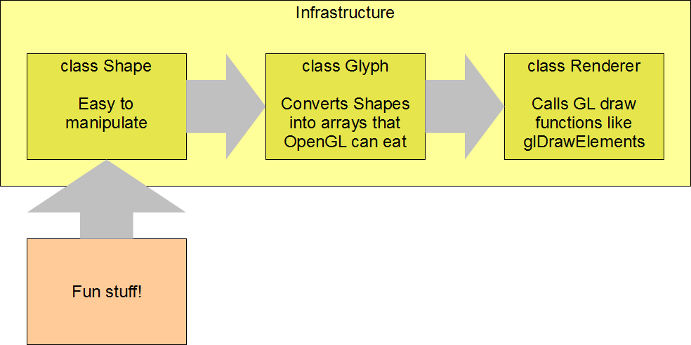The point of all this, though, is that once that infrastructure is in place, we can have some fun generating interesting shapes to make pretty pictures with. In particular, I'm interested in how we can maximise our fun with a minimum amount of code.
Shape class
Color = namedtuple('Color', 'r g b a')
class Shape(object):
def __init__(self, verts, faces, colors):
# list of Vec3s
self.vertices = verts
# list of faces, each face is a list of
# indices into 'vertices'
self.faces = faces
# List of Colors, one per face
self.face_colors = colors
A polyhedron is a 3D shape with flat faces and straight edges. This class models one, with a color for each face.
Simple Example
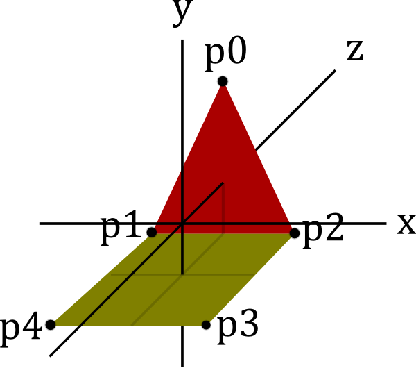Instance of Shape
shape = Shape(
vertices=[
# x y z
Vec3( 0, 2, 1), # p0
Vec3(-1, 0, 1), # p1
Vec3( 1, 0, 1), # p2
Vec3( 1, 0, -1), # p3
Vec3(-1, 0, -1), # p4
],
faces=[
[0, 1, 2], # triangle
[1, 2, 3, 4], # square
],
face_colors=[Color.Red, Color.Yellow],
)
A simple example is a geometry consisting of a triangle joined to a square.
We create a list of vertex positions (remember these are just named tuples) and then a list of faces. Each face is just a list of integers, indexes into the vertex list.
Instantiating our Shape class like this is great to represent the geometry for ourselves, but we can't pass this data to OpenGL. There are a few operations we have to do to it first.
Diagram of our Shape instance
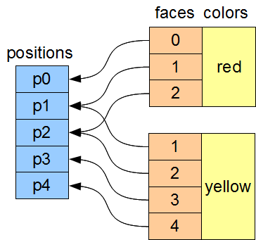Step 1: Calculate face normals
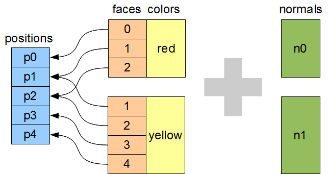Step 1: Calculate face normals
def get_normal(positions, face):
'''
Return the face's unit normal vector.
'''
v0 = positions[face[0]]
v1 = positions[face[1]]
v2 = positions[face[2]]
a = v0 - v1
b = v2 - v1
return b.cross(a).normalized()
Firstly, we have to calculate the normals for each face. This is easy enough - we take the first three vertices of the face, look up their positions. v0 to v1 is one vector, v2 to v1 is another. Since they both must lie in the plane of the face, their cross-product must be orthogonal to the face. We normalise the length, and this is our face normal.
I've been telling you that my Vec3 class is just a named tuple - I should confess at this point that it started to sprout a few methods. Obviously here I'm using vector subtraction and the '.cross' method. By the end of this exercise I'd written my own fully-formed vector and matrix classes. One day I ripped them out and replaced them with PyEuclid. It halved the size of my code. Should have done that from the start.
After creating normals
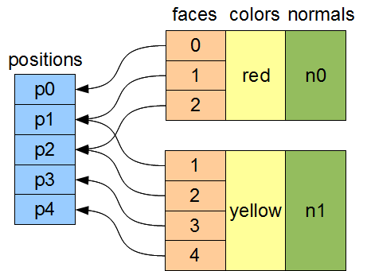Step 2: Denormalise vertices
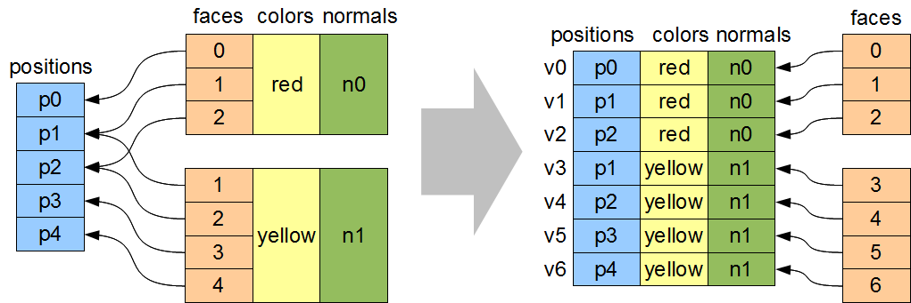On the left, we have the structure that our Shape class provides. We need to denormalise the color information - we need to copy the color entries onto each individual vertex.
Some vertex positions are referenced by more than one color. These vertex positions need duplicating, so that we can have one entry for each color.
See how vertex positions p1 and p2 have been duplicated on the right.
As shapes get more complex, this will become more and more common. In general, every vertex will have at least three duplicates like this. (think of a single corner of a cube - the vertex participates in three different faces, each with different colors or other attributes)
When we duplicate vertex positions like this, we also need to update the indexes that make up the face. See how the indices for the square face, in the bottom-left, are now totally different than they were originally.
Step 2: Denormalise vertices
def shape_to_glyph(positions, faces, colors):
vertices = []
for face, color in zip(faces, colors):
new_indices = {}
for old_index in face:
new_indices[old_index] = len(vertices)
vertex = chain(
positions[old_index],
color,
get_normal(positions, face)
)
vertices.append(vertex)
# cont...
x
Step 2: Denormalise vertices
def shape_to_glyph(positions, faces, colors):
indices = []
for face, color in zip(faces, colors):
# ...cont
for old_index in tessellate(face):
indices.append(
new_indices[old_index]
)
x
After Denormalising
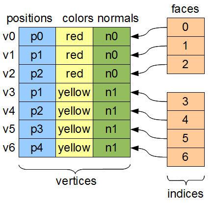x
Step 3: Tessellate
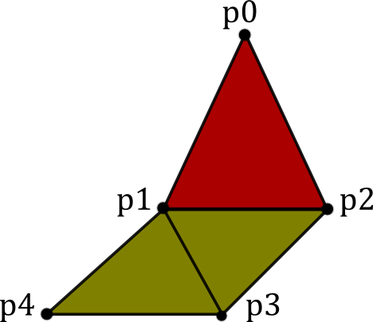When I say tessellate, I just mean break each polygon into triangles. You don't have to do this, necessarily. OpenGL will accept other primitive types. But I send geometry as GL_TRIANGLES because it makes it easy to render discontinuous shapes in a single draw call.
There are well-known algorithms to do this for arbitrary polygons. An implementation using the GLU library takes about 150 lines of Python.
Step 3: Tessellate
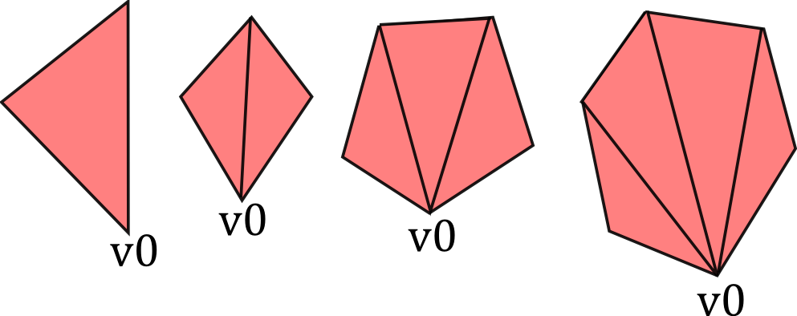However, a really simple alternative is to just take vertex zero (or any arbitrary vertex) and join it up to all the other vertices in the face.
Step 3: Tessellate
def tessellate(face):
'''
Break the given face into triangles.
e.g. [0, 1, 2, 3, 4] ->
[[0, 1, 2], [0, 2, 3], [0, 3, 4]]
Does not work on concave faces.
'''
return (
[face[0], face[i], face[i + 1]]
for i in xrange(1, len(face) - 1)
)
This poor-man's tessellation won't work with concave faces. But in the interests of simplicity, lets run with this for the time being and see how far it gets us.
After tessellation
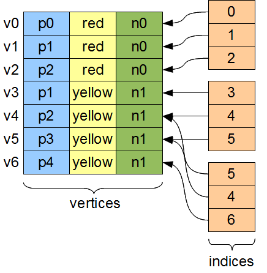x
Step 4: Flatten, ctypes, bind
vertices = [
(x, y, z, r, g, b, a, x, y, z), # v0
(x, y, z, r, g, b, a, x, y, z), # v1
(x, y, z, r, g, b, a, x, y, z), # v2
# etc...
]
indices = [0, 1, 2, 3, 4, 5, 5, 4, 6]
- Put into ctypes arrays
- Bind them to OpenGL VBOs (optional)
So this is the final state of our data.
Next these get put into ctypes arrays, optionally put into a VBO, and optionally then associated with a VAO. This is all boilerplate OpenGL stuff, so I won't cover it.
Step 5: Render
def draw(self):
glBindVertexArray(item.glyph.vao)
glDrawElements(
GL_TRIANGLES,
len(indices),
GL_UNSIGNED_SHORT,
indices
)
Everything up to this point can be done once, at application start-up, or when shapes have been created. This is the only step that needs doing every frame.
First Light
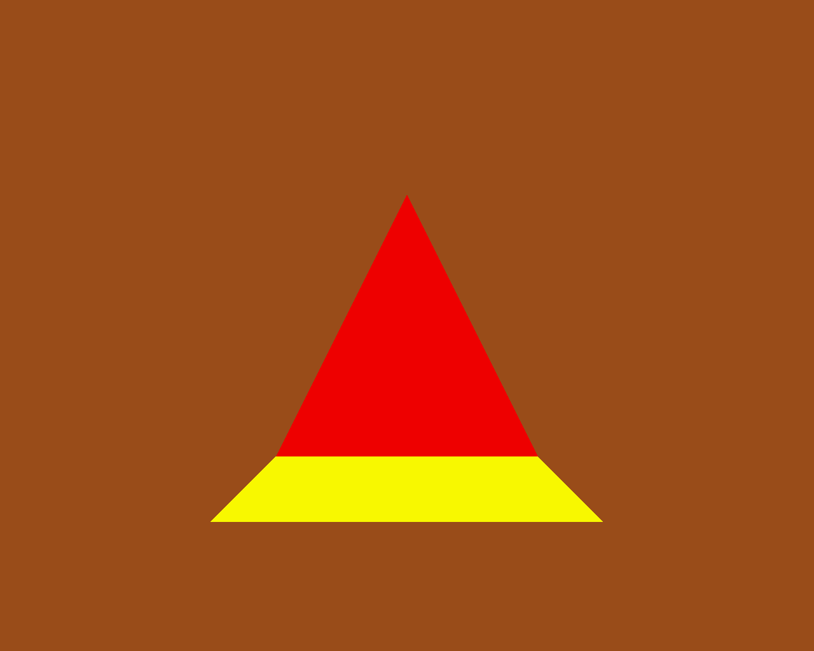So. It's been a bit of a slog to get here, but finally, we now in a position to run this code and get some visuals out.
Shape Factories
Now let's use our infrastructure for some fun!
def Tetrahedron(edge, face_colors):
size = edge / sqrt(2)/2
verts = [
(+size, +size, +size), # v0
(-size, -size, +size), # v1
(-size, +size, -size), # v2
(+size, -size, -size), ] # v3
faces = [
[0, 2, 1], # f0
[1, 3, 0], # f1
[2, 3, 1], # f2
[0, 3, 2] ] # f3
return Shape(verts, faces, face_colors)
Tetrahedron

Cube
def Cube(edge, face_colors=None):
e2 = edge/2
verts = list(
product(* repeat([-e2, +e2], 3) )
)
faces = [
[0, 1, 3, 2], # left
[4, 6, 7, 5], # right
[7, 3, 1, 5], # front
[0, 2, 6, 4], # back
[3, 7, 6, 2], # top
[1, 0, 4, 5], # bottom
]
return Shape(verts, faces, face_colors)
Here we see the eight vertices of a cube, and its six faces.
Demo Cube & Others
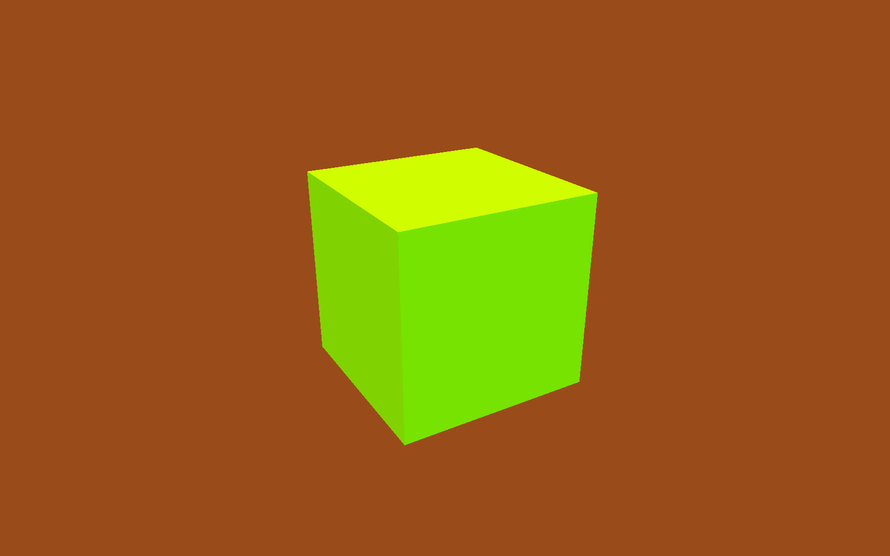Tetrahedron, Cube, Octahedron, Dodecahedron, Icosahedron (Platonic) DualTetrahedron & combinations of all the above. Space Station.
Shapes as an attribute of GameItems
class GameItem(object):
def __init__(self, ** kwargs):
self.__dict__.update(** kwargs)
world.add( GameItem(
shape=Cube(1, repeat(Color.Red)),
position=Vector(1, 2, 3),
) )
Rendering Multiple Items
def draw(self, world):
for item in world.items:
glPushMatrix()
glMultMatrixf(item.transform)
glBindVertexArray(item.glyph.vao)
glDrawElements(
GL_TRIANGLES,
len(item.glyph.indices),
GL_UNSIGNED_SHORT,
item.glyph.indices
)
glPopMatrix()
glBindVertexArray(0)
So here's our draw function, that gets called every frame. It's very simple and minimal, but it's all you need. Everything you see today is drawn by this inner loop.
We're given a collection of items. An 'item' is the term I use for a single drawable object. Items have a position, an orientation, and a glyph, which is what I call the collection of arrays that OpenGL uses to draw something.
Items don't have any functionality - they are just a dumb collection of attributes.
We're iterate through all the items we're given. The push and mult matrix calls are to tell OpenGL about the position and orientation of the item we're about to render. The item.transform property is a 4x4 matrix that represents the combination of the item's position and orientation.
Messing with the modelview matrix like this is the traditional old OpenGL way of doing this - all the cool kids are passing item.transform into their shaders instead these days, we don't care for now, it has the same effect.
Next we bind a vertex array. This is telling OpenGL where the data is that we want to draw. We'll take a look at that in a second,
Then finally, we call DrawElements, which actually draws our object.
Moving Shapes
class Orbit(object):
def __init__(self, distance, speed, phase=None):
self.distance = distance
self.speed = speed
if phase is None:
phase = uniform(0, 2 * pi)
self.phase = phase
def __call__(self, item, time):
bearing = time * self.speed + self.phase
x = self.distance * sin(bearing)
z = self.distance * cos(bearing)
item.position = Vec3(x, 0, z)
I've already sneakily added a class to move items around in the world, I'm currently using it to move the camera around. We can add an instance of this or similar classes to any item. If it's attached as the item's 'update' attribute, then it will be called between screen refreshes, to move the item around in the world, or spin it.
Here we see an example of 'orbit', which will orbit the origin. You can imagine more complex behaviours, the one I attached to the camera is called WobblyOrbit
Using a Mover
world.add( GameItem(
shape=Cube(1, repeat(Color.Red)),
update=Orbit(distance=20, speed=4),
) )
# then, in world.update():
for item in self.items:
if item.update:
item.update(item, self.time)
Demo of movers
TODO: create this demo
Create some sorts of mover
Composite shapes
class MultiShape(object):
def __init__(self):
self.children = []
self.matrices = []
def add(self, child, pos=None, orient=None):
self.children.append(child)
self.matrices.append(Matrix(pos, orient))
So this is all well and good, but to create complex shapes this way is quite tedious. In addition, rendering each shape independantly, using a distinct call to glDrawArrays for each Shape, gets very slow after a few hundred shapes are added. What we really need is a way to compose new shapes out of combinations of the existing ones.
Introducing MultiShape, the composite shape. As you can see, this is a really simple class, it just contains a collection of child shapes, and a parallel collection of matrices. These matrices represent the transformation that should be applied to each child shape. For example, a 'Car' multishape could contain four 'wheel' child shapes, but each wheel would have an offset applied relative to the centre of the car. I'm storing these transformation as a matrix like this because this makes it easy to encapsulate any sort of transformation - the wheels could be at different orientations, or different scales, or even have non affine transformations like shearing applied.
Generating MultiShape Vertices
Class MultiShape continued...
@property
def vertices(self):
return (
matrix.transform(vertex)
for idx, matrix in enumerate(self.matrices)
for vertex in self.children[idx].vertices
)
If MultiShape is going to be useable wherever Shape is useable, it has to provide the same interface. Luckily Shape's interface is very simple, consisting just of collections for vertices, faces and face_colors. Here we see how multishape provides a sequence of vertices, by applying the relevant matrix transformation to each of its child shapes.
Similar properties can be added to MultiShape to expose collections of faces and face_colors, by aggregating those of its child Shapes.
Class Diagram
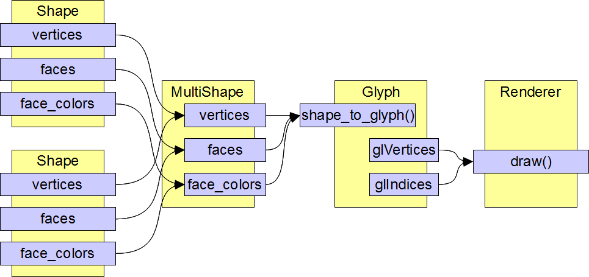Demo Some Composite Shapes
Ring, TriAxisRings, CubeGlob, RgbCubeCluster
Using Composite Shapes
def RgbCubeCluster(edge, edge, cube_count):
cluster = MultiShape()
for _ in xrange(cube_count):
pos = Vec3(
randint(-edge/2, +edge/2),
randint(-edge/2, +edge/2),
randint(-edge/2, +edge/2),
)
color = (pos + edge/2) / edge * 255
cluster.add(
Cube(edge, repeat(color)),
position=Vec3(* pos)
)
return cluster
Algorithmic manipulation
Demo: Subdivision, Normalization, Stellation, Extrusion, Koche Tetrahedron
EOF
- PyWeek:
- Make a Python game in a week competition Starts midnight at start of Sunday 2011/04/03 http://pyweek.org
- This presentation:
- https://bitbucket.org/tartley/algorithmic-generation-of-geometry
- Code:
- https://bitbucket.org/tartley/gloopy